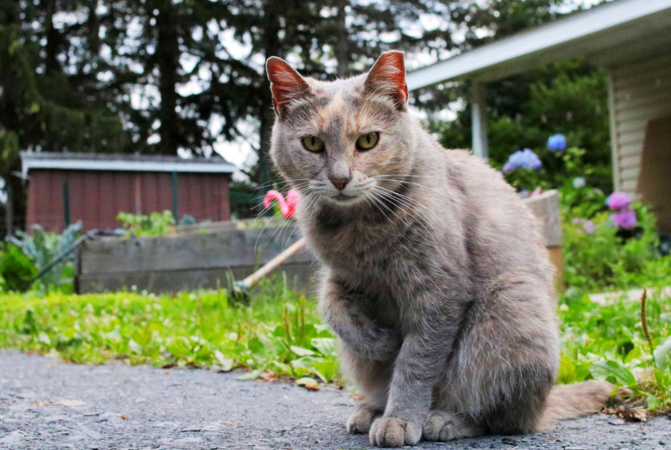

Esta es la historia de Mike, un gato callejero que ha rondeado regularmente las calles de una pequeña colonia, cerca de una gran ciudad y un bosque profundo. Mike vive una vida tranquila, pero curiosa, jugando con los niños y las mascotas de la colonia.
En una noche peculiar, Mike oye ruidos preocupantes provenientes del bosque que no lo dejan descansar en la colonia. Preocupado por los sonidos extraños, Mike debe tomar una decisión de manera urgente.